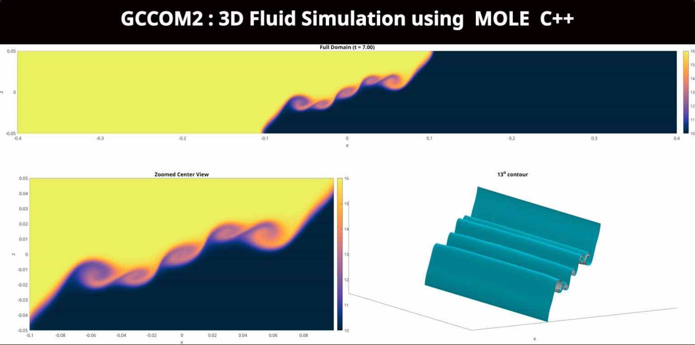
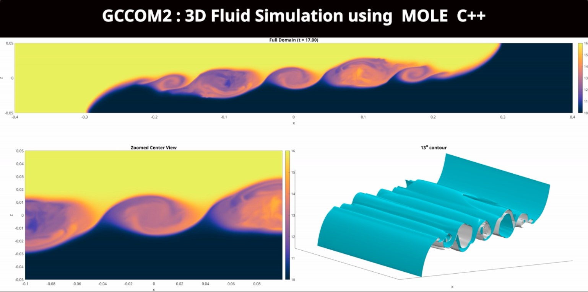
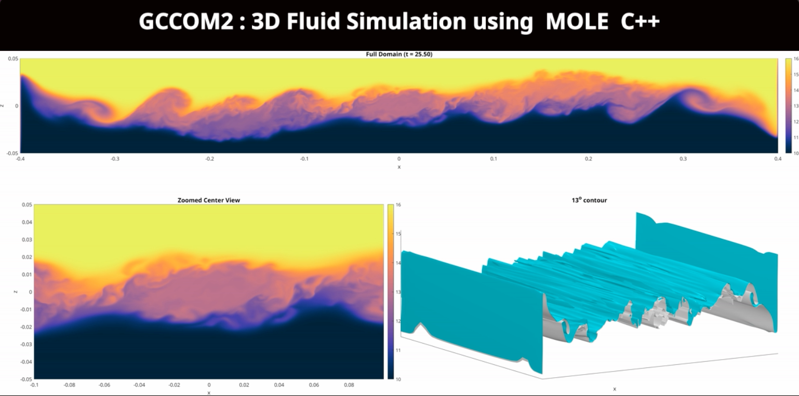
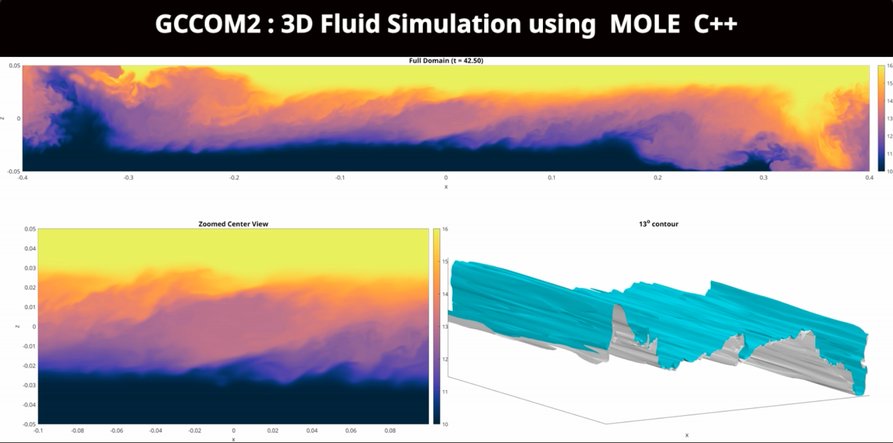
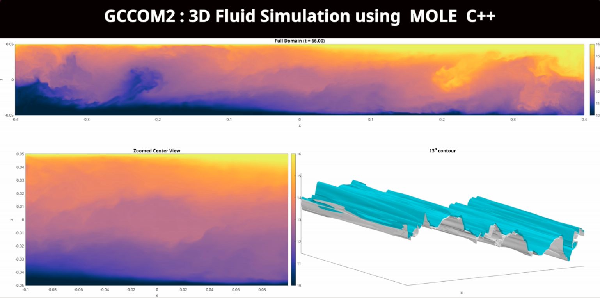
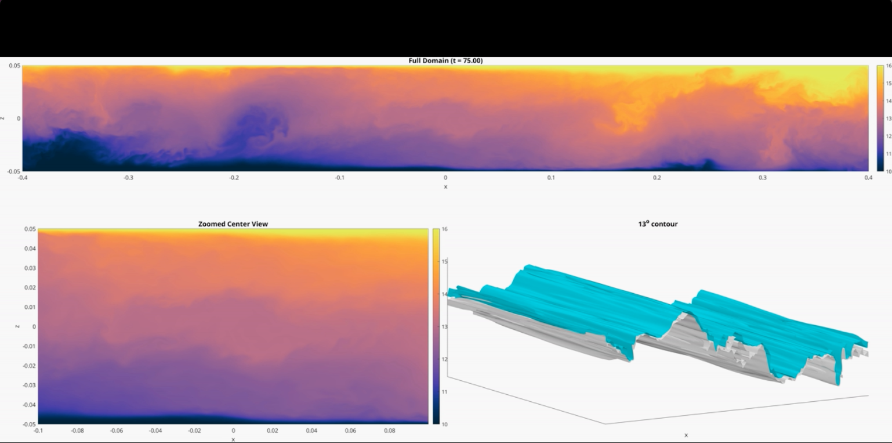

The following image gallery illustrates a 3D fluid simulation of General Curvilinear Coastal Model (GCCOM2). The seiche experiment shows the mixing of liquid at two different densities with a Reynolds number of 110, using Boussinesq approximation for buoyancy. The model uses MOLE's C++ implementation and MPI parallelization to solve the 3D Non-hyrdrostatic Navier-Stokes equations using mimetic operators to handle boundary conditions between adjacent domains.
Additional resources related to this work:
(1) A video demostration of the GCCOM2 simulation is available
here,
(2) More technical details on the modeling and implementation of this application
using the MOLE C++ API, including a performance scalability analysis on an exascale
computer system are given in this
short video presentation, created by Dr. Jared Brzenski.
t = 7.0 secs |
t = 17.0 secs |
 |
 |
t = 25.5 secs |
t = 42.5 secs |
 |
 |
t = 66.0 secs |
t = 75.0 secs |
 |
 |